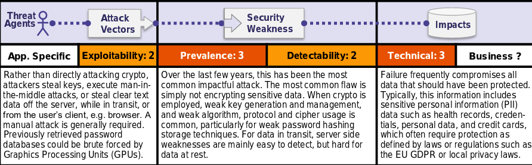

Is the Application Vulnerable?
The first thing is to determine the protection needs of data in transit and at rest. For example, passwords, credit card numbers, health records, personal information and business secrets require extra protection, particularly if that data falls under privacy laws, e.g. EU's General Data Protection Regulation (GDPR), or regulations, e.g. financial data protection such as PCI Data Security Standard (PCI DSS). For all such data:
•Is any data transmitted in clear text? This concerns protocols such as HTTP, SMTP, and FTP. External internet traffic is especially dangerous. Verify all internal traffic e.g. between load balancers, web servers, or back-end systems.
•Is sensitive data stored in clear text, including backups?
•Are any old or weak cryptographic algorithms used either by default or in older code? •Are default crypto keys in use, weak crypto keys generated or re-used, or is proper key management or rotation missing?
•Is encryption not enforced, e.g. are any user agent (browser) security directives or headers missing?
•Does the user agent (e.g. app, mail client) not verify if the received server certificate is valid?
How to Prevent
Do the following, at a minimum, and consult the references:
•Classify data processed, stored, or transmitted by an application. Identify which data is sensitive according to privacy laws, regulatory requirements, or business needs.
•Apply controls as per the classification.
•Don’t store sensitive data unnecessarily.Discard it as soon as possible or use PCI DSS complianttokenization or even truncation. Data that is not retained cannot be stolen.
•Make sure to encrypt all sensitive data at rest.
•Ensure up-to-date and strong standard algorithms, protocols, and keys are in place; use proper key management.
•Encrypt all data in transit with secure protocols such as TLS with perfect forward secrecy (PFS) ciphers, cipher prioritization by the server, and secure parameters. Enforce encryption using directives like HTTP Strict Transport Security (HSTS).
•Disablecaching for responses that contain sensitive data.
•Store passwords using strong adaptive and salted hashing functions with a work factor (delay factor), such as Argon2, scrypt, bcrypt, or PBKDF2.
•Verify independently the effectiveness of configuration and settings.
Example Attack Scenarios
Scenario #1: An application encrypts credit card numbers in a database using automatic database encryption. However, this data is automatically decrypted when retrieved, allowing an SQL injection flaw to retrieve credit card numbers in clear text.
Scenario #2: A site doesn't use or enforce TLS for all pages or supports weak encryption. An attacker monitors network traffic (e.g. at an insecure wireless network), downgrades connections from HTTPS to HTTP, intercepts requests, and steals the user's session cookie. The attacker then replays this cookie and hijacks the user's (authenticated) session, accessing or modifying the user's private data. Instead of the above they could alter all transported data, e.g. the recipient of a money transfer.
Scenario #3: The password database uses unsalted or simple hashes to store everyone's passwords. A file upload flaw allows an attacker to retrieve the password database. All the unsalted hashes can be exposed with a rainbow table of pre-calculated hashes. Hashes generated by simple or fast hash functions may be cracked by GPUs, even if they were salted.